from pathlib import Path
import contextily as cx
import geopandas
import matplotlib.colors as mcolors
import matplotlib.pyplot as plt
import numpy as np
import pandas
import rasterio
from rasterio.mask import mask as rio_mask
from shapely.geometry import box, mappingData prep
Embeddings
emb20 = geopandas.read_file('../jupyterlite/content/uk_lsoa_london_embeds_2020.geojson')
emb24 = geopandas.read_file('../jupyterlite/content/uk_lsoa_london_embeds_2024.geojson')- Pull out geometries and LSOA codes
lsoas = emb20[['LSOA21CD', 'geometry']]Landsat
We use two Level-2 Surface Reflectance Landsat scenes stored inside this project:
- 2019: Landsat 8 (
LC08) scene acquired on 2019-08-26 - 2025: Landsat 9 (
LC09) scene acquired on 2025-08-11
Both products include:
SR_B1toSR_B7: optical surface-reflectance bandsQA_*: quality masksST_*: surface-temperature layers
For this notebook we focus on surface reflectance bands 1-7, because they are directly comparable across years and they are enough for RGB composites and NDVI.
Landsat scenes cover a much larger area than London, so the first step is to inspect the scene footprint against a London boundary and then crop and mask the rasters to that extent.
def resolve_repo_root() -> Path:
candidates = [Path.cwd(), Path.cwd().parent, Path.cwd().parent.parent]
for candidate in candidates:
if (candidate / "data_prep" / "landsat").exists():
return candidate
raise FileNotFoundError("Could not locate the satIMD repository root (looking for data_prep/landsat).")
REPO_ROOT = resolve_repo_root()
CONTENT_ROOT = REPO_ROOT / "data_prep"
LANDSAT_ROOT = CONTENT_ROOT / "landsat"
BOUNDARIES_ZIP = CONTENT_ROOT / "statistical-gis-boundaries-london.zip"
BOUNDARIES_LAYER = "zip://" + str(BOUNDARIES_ZIP) + "!statistical-gis-boundaries-london/ESRI/LSOA_2011_London_gen_MHW.shp"
LANDSAT_SCENES = {
"2019": LANDSAT_ROOT / "2019",
"2025": LANDSAT_ROOT / "2025",
}
print(f"Repository root: {REPO_ROOT}")
print(f"Boundaries zip: {BOUNDARIES_ZIP}")
for year, scene_dir in LANDSAT_SCENES.items():
print(f"{year}: {scene_dir}")Repository root: /Users/Andrea/Library/CloudStorage/OneDrive-TheUniversityofLiverpool/GSSI_workshop/satIMD
Boundaries zip: /Users/Andrea/Library/CloudStorage/OneDrive-TheUniversityofLiverpool/GSSI_workshop/satIMD/jupyterlite/content/statistical-gis-boundaries-london.zip
2019: /Users/Andrea/Library/CloudStorage/OneDrive-TheUniversityofLiverpool/GSSI_workshop/satIMD/jupyterlite/content/landsat/2019
2025: /Users/Andrea/Library/CloudStorage/OneDrive-TheUniversityofLiverpool/GSSI_workshop/satIMD/jupyterlite/content/landsat/2025London boundary and scene inventory
For the Landsat workflow we load the 2011 London LSOA boundaries directly from statistical-gis-boundaries-london.zip.
This geometry is used for the London extent visualisation and for cropping the rasters later on. The existing object lsoas = emb20[['LSOA21CD', 'geometry']] is kept unchanged so the rest of the notebook can continue to use the embeddings-based geometry where needed.
In Landsat Collection 2, the key file groups are:
SR_B*: optical surface reflectanceQA_*: quality assessment layersST_*: land surface temperature products
london_lsoas_2011 = geopandas.read_file(BOUNDARIES_LAYER)
london_boundary = geopandas.GeoDataFrame(
geometry=[london_lsoas_2011.geometry.unary_union],
crs=london_lsoas_2011.crs
)
print(f"Loaded {len(london_lsoas_2011)} London LSOAs from the 2011 boundary file")
print(f"Boundary CRS: {london_lsoas_2011.crs}")
ax = london_lsoas_2011.plot(figsize=(8, 8), facecolor="none", edgecolor="steelblue", linewidth=0.2)
ax.set_title("London LSOA 2011 boundary")
ax.set_axis_off()
plt.tight_layout()
plt.show()
def scene_inventory(scene_dir: Path, year: str) -> pandas.DataFrame:
scene_files = sorted(scene_dir.glob("*.TIF"))
rows = []
for tif in scene_files:
suffix = tif.stem.split("_")[-1]
rows.append({
"year": year,
"file": tif.name,
"layer": suffix,
"kind": (
"surface_reflectance" if "_SR_B" in tif.stem else
"qa" if "QA" in tif.stem else
"surface_temperature" if "_ST_" in tif.stem else
"other"
)
})
return pandas.DataFrame(rows)
landsat_inventory = pandas.concat(
[scene_inventory(scene_dir, year) for year, scene_dir in LANDSAT_SCENES.items()],
ignore_index=True
)
landsat_inventory.groupby(["year", "kind"]).size()/var/folders/kc/0skncz1x23jd62216qtt96k80000gn/T/ipykernel_40982/2393429184.py:3: DeprecationWarning: The 'unary_union' attribute is deprecated, use the 'union_all()' method instead.
geometry=[london_lsoas_2011.geometry.unary_union],Loaded 4835 London LSOAs from the 2011 boundary file
Boundary CRS: PROJCS["OSGB36 / British National Grid",GEOGCS["OSGB36",DATUM["Ordnance_Survey_of_Great_Britain_1936",SPHEROID["Airy 1830",6377563.396,299.3249646,AUTHORITY["EPSG","7001"]],AUTHORITY["EPSG","6277"]],PRIMEM["Greenwich",0],UNIT["Degree",0.0174532925199433]],PROJECTION["Transverse_Mercator"],PARAMETER["latitude_of_origin",49],PARAMETER["central_meridian",-2],PARAMETER["scale_factor",0.999601272],PARAMETER["false_easting",400000],PARAMETER["false_northing",-100000],UNIT["metre",1,AUTHORITY["EPSG","9001"]],AXIS["Easting",EAST],AXIS["Northing",NORTH]]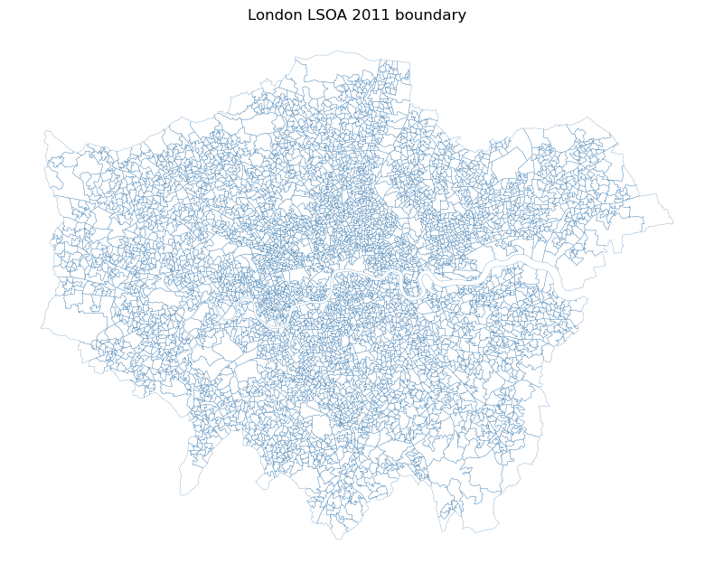
year kind
2019 qa 4
surface_reflectance 7
surface_temperature 8
2025 qa 4
surface_reflectance 7
surface_temperature 8
dtype: int64Raster Properties & Loading Bands
Landsat 8 and Landsat 9 carry two sensors: the Operational Land Imager (OLI) and the Thermal Infrared Sensor (TIRS). Together they provide 11 spectral bands.
| Band | Name | Wavelength | Resolution | What it is good for |
|---|---|---|---|---|
| 1 | Ultra Blue (Coastal/Aerosol) | 0.43-0.45 um | 30 m | Coastal water, haze, aerosol studies |
| 2 | Blue | 0.45-0.51 um | 30 m | Water depth, soil and vegetation distinction |
| 3 | Green | 0.53-0.59 um | 30 m | Peak vegetation reflectance |
| 4 | Red | 0.64-0.67 um | 30 m | Chlorophyll absorption, vegetation versus bare soil |
| 5 | Near Infrared (NIR) | 0.85-0.88 um | 30 m | Biomass, vegetation health, water boundaries |
| 6 | SWIR-1 | 1.57-1.65 um | 30 m | Soil moisture, snow and cloud separation |
| 7 | SWIR-2 | 2.11-2.29 um | 30 m | Geology, burn scars, dry surfaces |
| 8 | Panchromatic | 0.50-0.68 um | 15 m | Higher-resolution greyscale detail |
| 9 | Cirrus | 1.36-1.38 um | 30 m | High-altitude cirrus cloud detection |
| 10 | Thermal Infrared (TIRS-1) | 10.6-11.19 um | 100 m | Surface temperature |
| 11 | Thermal Infrared (TIRS-2) | 11.50-12.51 um | 100 m | Surface temperature, dual-band retrieval |
What does 30 m resolution mean? Each pixel covers a 30 x 30 metre area on the ground. This is coarse relative to commercial imagery, but it is extremely useful for free, long-run environmental monitoring and cross-year comparison.
In this exercise we focus on Bands 1-7, which are the optical bands available at 30 m and are the ones we need for visualisation and NDVI.
In Python with rasterio, each band is loaded as a 2D numpy array, which means we can inspect, map, and transform the pixel values directly.
Scene footprint and London extent
We compare the footprint of each scene with the London extent derived from the 2011 LSOA boundary file. This gives us a quick sense of how much of each image overlaps the study area before cropping and masking.
def first_surface_reflectance_band(scene_dir: Path) -> Path:
matches = sorted(scene_dir.glob("*_SR_B1.TIF"))
if not matches:
raise FileNotFoundError(f"No SR_B1 file found in {scene_dir}")
return matches[0]
footprints = []
for year, scene_dir in LANDSAT_SCENES.items():
with rasterio.open(first_surface_reflectance_band(scene_dir)) as src:
footprints.append({
"year": year,
"geometry": box(*src.bounds),
"crs": src.crs,
"resolution_m": src.res[0],
})
scene_footprints = geopandas.GeoDataFrame(footprints, crs=footprints[0]["crs"]).drop(columns="crs")
london_outline = london_boundary.to_crs(scene_footprints.crs)
ax = scene_footprints.plot(figsize=(8, 8), facecolor="none", edgecolor=["#1f78b4", "#e31a1c"], linewidth=2)
london_outline.plot(ax=ax, facecolor="none", edgecolor="black", linewidth=1.2)
cx.add_basemap(ax, crs=scene_footprints.crs, source=cx.providers.CartoDB.Positron, alpha=0.5)
ax.set_title("Landsat scene footprints and London extent")
ax.set_axis_off()
plt.tight_layout()
plt.show()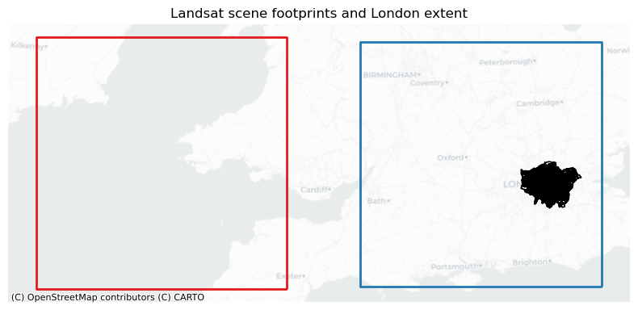
Crop and mask to London
The raw scenes cover much more than London. We therefore crop the raster to the study extent and mask it so that pixels outside the London boundary are removed.
For this step we use the geometry loaded from statistical-gis-boundaries-london.zip, while keeping the embeddings-derived lsoas object unchanged for the rest of the notebook.
The cropped outputs are cached under jupyterlite/content/landsat/{year}/london/ so the notebook does not need to repeat the masking every time you rerun it.
SURFACE_REFLECTANCE_SCALE = 0.0000275
SURFACE_REFLECTANCE_OFFSET = -0.2
def available_sr_bands(scene_dir: Path) -> dict[str, Path]:
band_paths = {}
for tif in sorted(scene_dir.glob("*_SR_B*.TIF")):
band_name = tif.stem.split("_")[-1]
if band_name.startswith("B") and band_name[1:].isdigit():
band_paths[band_name] = tif
return band_paths
def crop_and_mask_scene(scene_dir: Path, year: str, boundary: geopandas.GeoDataFrame) -> dict[str, Path]:
out_dir = scene_dir / "london"
out_dir.mkdir(parents=True, exist_ok=True)
masked_paths = {}
for band_name, tif_path in available_sr_bands(scene_dir).items():
out_path = out_dir / tif_path.name.replace(".TIF", "_london.tif")
masked_paths[band_name] = out_path
if out_path.exists():
continue
with rasterio.open(tif_path) as src:
boundary_in_raster_crs = boundary.to_crs(src.crs)
geoms = [mapping(boundary_in_raster_crs.geometry.unary_union)]
out_image, out_transform = rio_mask(src, geoms, crop=True)
out_meta = src.meta.copy()
out_meta.update({
"driver": "GTiff",
"height": out_image.shape[1],
"width": out_image.shape[2],
"transform": out_transform,
})
with rasterio.open(out_path, "w", **out_meta) as dst:
dst.write(out_image)
return masked_paths
cropped_band_paths = {
year: crop_and_mask_scene(scene_dir, year, london_boundary)
for year, scene_dir in LANDSAT_SCENES.items()
}
{year: sorted(paths.keys()) for year, paths in cropped_band_paths.items()}/var/folders/kc/0skncz1x23jd62216qtt96k80000gn/T/ipykernel_40982/2661139417.py:28: DeprecationWarning: The 'unary_union' attribute is deprecated, use the 'union_all()' method instead.
geoms = [mapping(boundary_in_raster_crs.geometry.unary_union)]
/var/folders/kc/0skncz1x23jd62216qtt96k80000gn/T/ipykernel_40982/2661139417.py:28: DeprecationWarning: The 'unary_union' attribute is deprecated, use the 'union_all()' method instead.
geoms = [mapping(boundary_in_raster_crs.geometry.unary_union)]
/var/folders/kc/0skncz1x23jd62216qtt96k80000gn/T/ipykernel_40982/2661139417.py:28: DeprecationWarning: The 'unary_union' attribute is deprecated, use the 'union_all()' method instead.
geoms = [mapping(boundary_in_raster_crs.geometry.unary_union)]
/var/folders/kc/0skncz1x23jd62216qtt96k80000gn/T/ipykernel_40982/2661139417.py:28: DeprecationWarning: The 'unary_union' attribute is deprecated, use the 'union_all()' method instead.
geoms = [mapping(boundary_in_raster_crs.geometry.unary_union)]
/var/folders/kc/0skncz1x23jd62216qtt96k80000gn/T/ipykernel_40982/2661139417.py:28: DeprecationWarning: The 'unary_union' attribute is deprecated, use the 'union_all()' method instead.
geoms = [mapping(boundary_in_raster_crs.geometry.unary_union)]
/var/folders/kc/0skncz1x23jd62216qtt96k80000gn/T/ipykernel_40982/2661139417.py:28: DeprecationWarning: The 'unary_union' attribute is deprecated, use the 'union_all()' method instead.
geoms = [mapping(boundary_in_raster_crs.geometry.unary_union)]
/var/folders/kc/0skncz1x23jd62216qtt96k80000gn/T/ipykernel_40982/2661139417.py:28: DeprecationWarning: The 'unary_union' attribute is deprecated, use the 'union_all()' method instead.
geoms = [mapping(boundary_in_raster_crs.geometry.unary_union)]
/var/folders/kc/0skncz1x23jd62216qtt96k80000gn/T/ipykernel_40982/2661139417.py:28: DeprecationWarning: The 'unary_union' attribute is deprecated, use the 'union_all()' method instead.
geoms = [mapping(boundary_in_raster_crs.geometry.unary_union)]
/var/folders/kc/0skncz1x23jd62216qtt96k80000gn/T/ipykernel_40982/2661139417.py:28: DeprecationWarning: The 'unary_union' attribute is deprecated, use the 'union_all()' method instead.
geoms = [mapping(boundary_in_raster_crs.geometry.unary_union)]
/var/folders/kc/0skncz1x23jd62216qtt96k80000gn/T/ipykernel_40982/2661139417.py:28: DeprecationWarning: The 'unary_union' attribute is deprecated, use the 'union_all()' method instead.
geoms = [mapping(boundary_in_raster_crs.geometry.unary_union)]
/var/folders/kc/0skncz1x23jd62216qtt96k80000gn/T/ipykernel_40982/2661139417.py:28: DeprecationWarning: The 'unary_union' attribute is deprecated, use the 'union_all()' method instead.
geoms = [mapping(boundary_in_raster_crs.geometry.unary_union)]
/var/folders/kc/0skncz1x23jd62216qtt96k80000gn/T/ipykernel_40982/2661139417.py:28: DeprecationWarning: The 'unary_union' attribute is deprecated, use the 'union_all()' method instead.
geoms = [mapping(boundary_in_raster_crs.geometry.unary_union)]
/var/folders/kc/0skncz1x23jd62216qtt96k80000gn/T/ipykernel_40982/2661139417.py:28: DeprecationWarning: The 'unary_union' attribute is deprecated, use the 'union_all()' method instead.
geoms = [mapping(boundary_in_raster_crs.geometry.unary_union)]
/var/folders/kc/0skncz1x23jd62216qtt96k80000gn/T/ipykernel_40982/2661139417.py:28: DeprecationWarning: The 'unary_union' attribute is deprecated, use the 'union_all()' method instead.
geoms = [mapping(boundary_in_raster_crs.geometry.unary_union)]{'2019': ['B1', 'B2', 'B3', 'B4', 'B5', 'B6', 'B7'],
'2025': ['B1', 'B2', 'B3', 'B4', 'B5', 'B6', 'B7']}Load and scale the optical bands
The SR_B* layers are stored as scaled integers rather than ready-to-plot reflectance values. We therefore apply the standard Landsat Collection 2 scaling and offset before using them in maps or NDVI calculations.
At this stage we also replace nodata pixels with NaN, which makes later plotting and arithmetic much cleaner.
Raster properties and individual bands
This part first inspects the raster metadata and then looks at individual bands one by one.
The goal is not just to make a map, but to learn how different wavelengths respond to different surfaces. For example, vegetation often looks relatively dark in Red (Band 4) but much brighter in NIR (Band 5).
def read_surface_reflectance(path: Path) -> np.ndarray:
with rasterio.open(path) as src:
data = src.read(1).astype("float32")
nodata = src.nodata
if nodata is not None:
data[data == nodata] = np.nan
return (data * SURFACE_REFLECTANCE_SCALE + SURFACE_REFLECTANCE_OFFSET).astype("float32")
landsat_data = {}
for year, band_paths in cropped_band_paths.items():
bands = {band_name: read_surface_reflectance(path) for band_name, path in band_paths.items()}
required = {"B1", "B2", "B3", "B4", "B5", "B6", "B7"}
missing = sorted(required.difference(bands))
if missing:
raise ValueError(f"{year} is missing required optical bands: {missing}")
stack = np.stack([bands[band] for band in sorted(bands)], axis=0)
first_band_path = band_paths["B1"]
with rasterio.open(first_band_path) as src:
metadata = {
"shape": src.shape,
"crs": src.crs,
"resolution": src.res,
"bounds": src.bounds,
}
landsat_data[year] = {
"bands": bands,
"stack": stack,
"band_order": sorted(bands),
"metadata": metadata,
}
for year, payload in landsat_data.items():
print(f"\n{year} optical bands: {payload['band_order']}")
print(f" Shape : {payload['metadata']['shape']}")
print(f" CRS : {payload['metadata']['crs']}")
print(f" Resolution : {payload['metadata']['resolution']} m")
print(f" Bounds : {payload['metadata']['bounds']}")
print(f" Band 1 min/max: {np.nanmin(payload['bands']['B1']):.3f} / {np.nanmax(payload['bands']['B1']):.3f}")
print(f" Band 7 min/max: {np.nanmin(payload['bands']['B7']):.3f} / {np.nanmax(payload['bands']['B7']):.3f}")
2019 optical bands: ['B1', 'B2', 'B3', 'B4', 'B5', 'B6', 'B7']
Shape : (1504, 1943)
CRS : EPSG:32630
Resolution : (30.0, 30.0) m
Bounds : BoundingBox(left=672915.0, bottom=5685615.0, right=731205.0, top=5730735.0)
Band 1 min/max: -0.196 / 1.464
Band 7 min/max: -0.009 / 1.600
2025 optical bands: ['B1', 'B2', 'B3', 'B4', 'B5', 'B6', 'B7']
Shape : (1509, 1965)
CRS : EPSG:32631
Resolution : (30.0, 30.0) m
Bounds : BoundingBox(left=256185.0, bottom=5686095.0, right=315135.0, top=5731365.0)
Band 1 min/max: -0.199 / 1.411
Band 7 min/max: -0.007 / 1.600BAND_CMAPS = {
"B1": ("Blues", "Band 1 — Ultra Blue / Coastal Aerosol"),
"B7": ("YlOrBr", "Band 7 — SWIR-2"),
}
fig, axes = plt.subplots(2, 2, figsize=(14, 10))
for row, year in enumerate(["2019", "2025"]):
for col, (band_name, (cmap, title)) in enumerate(BAND_CMAPS.items()):
data = landsat_data[year]["bands"][band_name]
vmin, vmax = np.nanpercentile(data, [2, 98])
im = axes[row, col].imshow(data, cmap=cmap, vmin=vmin, vmax=vmax)
axes[row, col].set_title(f"{year} {title}")
axes[row, col].set_axis_off()
fig.colorbar(im, ax=axes[row, col], fraction=0.03, pad=0.04, label="Reflectance")
plt.tight_layout()
plt.show()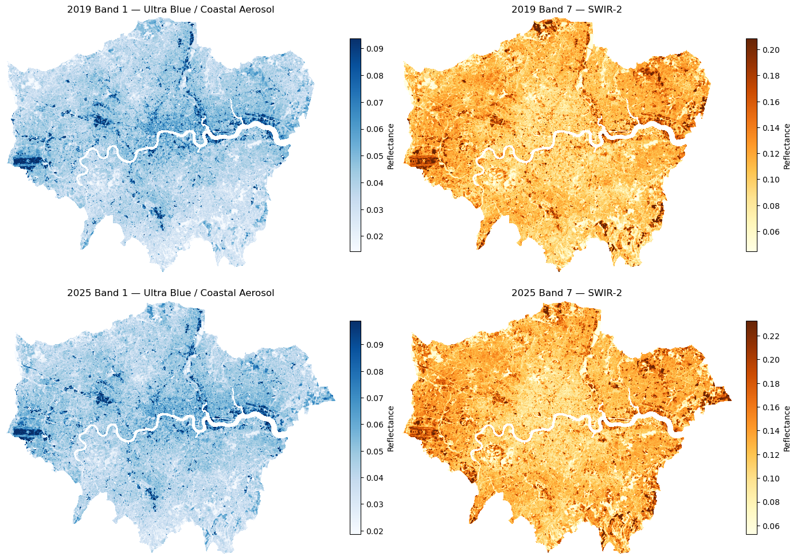
BAND_GRID = {
"B2": ("Blues", "Band 2 — Blue"),
"B3": ("Greens", "Band 3 — Green"),
"B4": ("Reds", "Band 4 — Red"),
"B5": ("RdYlGn", "Band 5 — NIR"),
}
for year in ["2019", "2025"]:
fig, axes = plt.subplots(2, 2, figsize=(13, 11))
for ax, (band_name, (cmap, label)) in zip(axes.flatten(), BAND_GRID.items()):
data = landsat_data[year]["bands"][band_name]
vmin, vmax = np.nanpercentile(data, [2, 98])
im = ax.imshow(data, cmap=cmap, vmin=vmin, vmax=vmax)
ax.set_title(f"{year} {label}")
ax.set_axis_off()
fig.colorbar(im, ax=ax, fraction=0.03, pad=0.04, label="Reflectance")
plt.tight_layout()
plt.show()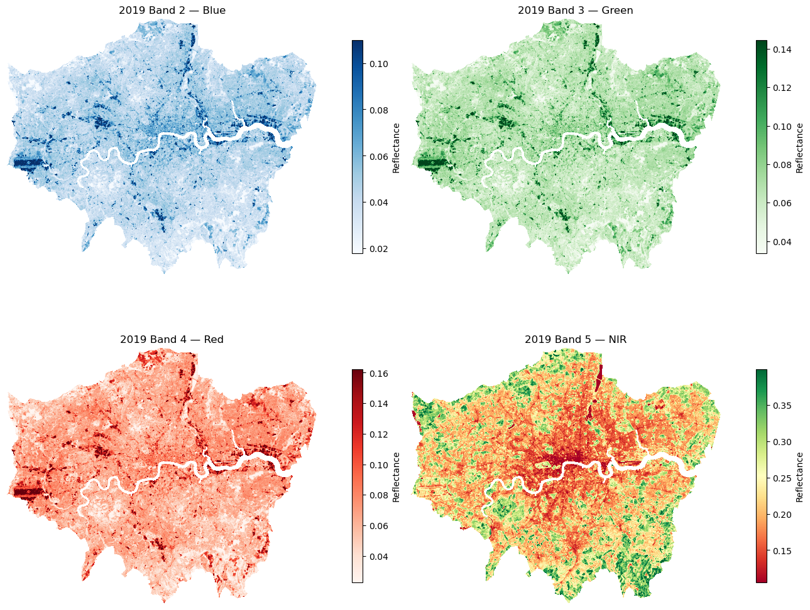
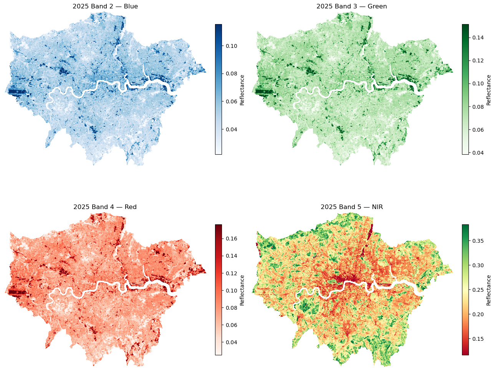
RGB Composites — True Colour & False Colour
Individual greyscale bands are useful, but most people understand the scene much more quickly once we stack three bands into an RGB composite.
| Composite | Red channel | Green channel | Blue channel | What it shows |
|---|---|---|---|---|
| True colour | Band 4 (Red) | Band 3 (Green) | Band 2 (Blue) | Approximation of how the landscape looks to the human eye |
| False colour (NIR) | Band 5 (NIR) | Band 4 (Red) | Band 3 (Green) | Vegetation appears red/pink; built-up areas often appear cyan/blue |
This is one of the most common visualisation steps in remote sensing because it reveals land cover patterns that are much harder to spot in a single greyscale band.
def percentile_stretch(rgb_stack: np.ndarray, low: int = 2, high: int = 98) -> np.ndarray:
stretched = np.zeros_like(rgb_stack, dtype="float32")
for idx in range(rgb_stack.shape[0]):
band = rgb_stack[idx]
vmin, vmax = np.nanpercentile(band, [low, high])
stretched[idx] = np.clip((band - vmin) / (vmax - vmin + 1e-6), 0, 1)
return np.nan_to_num(stretched, nan=0.0)
def rgb_from_bands(bands: dict[str, np.ndarray], order: tuple[str, str, str]) -> np.ndarray:
rgb_stack = np.stack([bands[band] for band in order], axis=0)
return np.moveaxis(percentile_stretch(rgb_stack), 0, -1)
for year in ["2019", "2025"]:
bands = landsat_data[year]["bands"]
true_colour = rgb_from_bands(bands, ("B4", "B3", "B2"))
false_colour = rgb_from_bands(bands, ("B5", "B4", "B3"))
fig, axes = plt.subplots(1, 2, figsize=(18, 7))
axes[0].imshow(true_colour)
axes[0].set_title(f"{year} True Colour (4-3-2)")
axes[1].imshow(false_colour)
axes[1].set_title(f"{year} False Colour / NIR (5-4-3)")
for ax in axes:
ax.set_axis_off()
plt.tight_layout()
plt.show()
fig, axes = plt.subplots(2, 2, figsize=(14, 14))
for row, year in enumerate(["2019", "2025"]):
bands = landsat_data[year]["bands"]
axes[row, 0].imshow(rgb_from_bands(bands, ("B4", "B3", "B2")))
axes[row, 0].set_title(f"{year} true colour (4-3-2)")
axes[row, 1].imshow(rgb_from_bands(bands, ("B5", "B4", "B3")))
axes[row, 1].set_title(f"{year} false colour (5-4-3)")
for ax in axes.ravel():
ax.set_axis_off()
plt.tight_layout()
plt.show()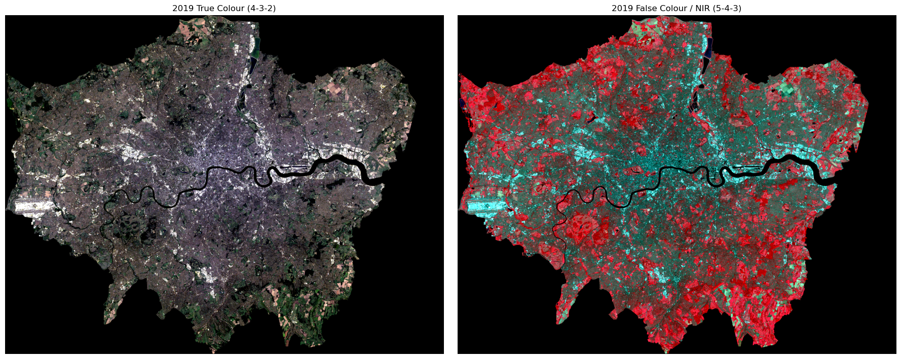
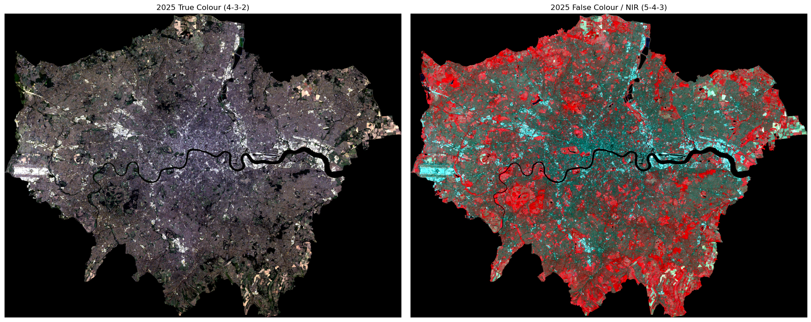
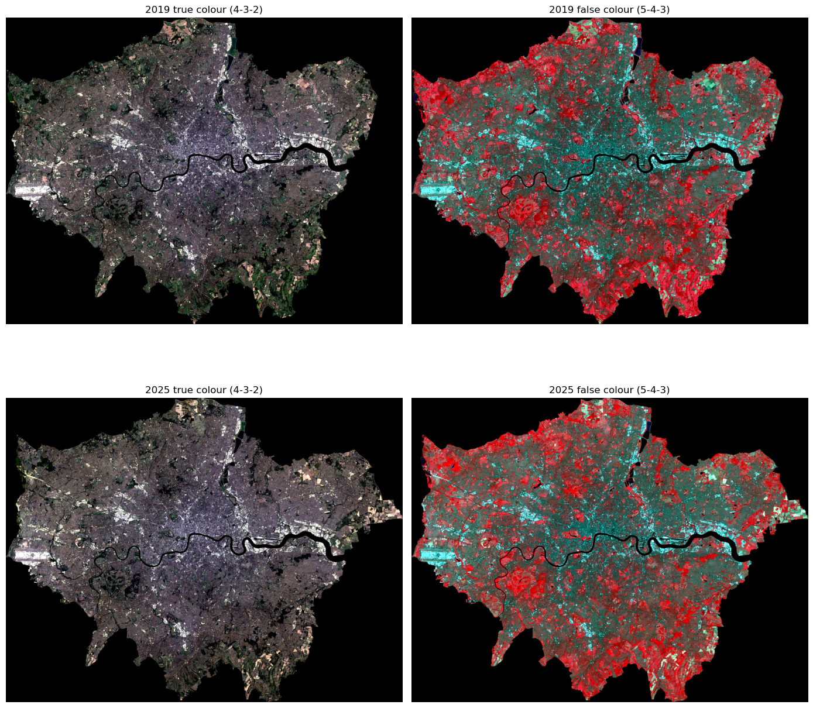
NDVI — Normalised Difference Vegetation Index
NDVI measures how much live green vegetation is present. It works because healthy vegetation tends to absorb red light and reflect near-infrared light.
\[\text{NDVI} = \frac{B5 - B4}{B5 + B4}\]
| NDVI value | Interpretation |
|---|---|
| < 0 | Water, cloud, shadow, snow-like surfaces |
| 0-0.2 | Bare soil, urban surfaces, rock |
| 0.2-0.5 | Sparse vegetation, grass, shrubs |
| > 0.5 | Dense, healthy vegetation |
In Python this is a simple vectorised numpy calculation, so we can compute it for every pixel without writing loops.
def calc_ndvi(bands: dict[str, np.ndarray]) -> np.ndarray:
nir = bands["B5"]
red = bands["B4"]
with np.errstate(divide="ignore", invalid="ignore"):
ndvi = np.where((nir + red) == 0, np.nan, (nir - red) / (nir + red))
return ndvi.astype("float32")
def classify_vegetation(ndvi: np.ndarray) -> np.ndarray:
veg = np.full_like(ndvi, np.nan)
veg[(ndvi >= 0.2) & (ndvi < 0.5)] = 1
veg[ndvi >= 0.5] = 2
return veg
ndvi_maps = {year: calc_ndvi(payload["bands"]) for year, payload in landsat_data.items()}
veg_maps = {year: classify_vegetation(ndvi) for year, ndvi in ndvi_maps.items()}
cmap_veg = mcolors.ListedColormap(["#91cf60", "#1a7837"])
norm_veg = mcolors.BoundaryNorm([0.5, 1.5, 2.5], cmap_veg.N)
fig, axes = plt.subplots(2, 2, figsize=(14, 14))
for row, year in enumerate(["2019", "2025"]):
ndvi = ndvi_maps[year]
veg = veg_maps[year]
ndvi_im = axes[row, 0].imshow(ndvi, cmap="Greens", vmin=-0.2, vmax=0.8)
axes[row, 0].set_title(f"{year} NDVI")
axes[row, 1].imshow(ndvi, cmap="Greys_r", vmin=-0.2, vmax=0.8, alpha=0.3)
axes[row, 1].imshow(veg, cmap=cmap_veg, norm=norm_veg)
axes[row, 1].set_title(f"{year} vegetation classes from NDVI")
fig.colorbar(ndvi_im, ax=axes[row, 0], fraction=0.03, pad=0.02)
for ax in axes.ravel():
ax.set_axis_off()
plt.tight_layout()
plt.show()
for year, ndvi in ndvi_maps.items():
print(year, f"NDVI range: {np.nanmin(ndvi):.3f} to {np.nanmax(ndvi):.3f}")IMD
Sources:
2019
- Read source file with all scores
imd19_src = pandas.read_excel(
(
'https://assets.publishing.service.gov.uk/'
'media/5d8b3b51ed915d036a455aa6/'
'File_5_-_IoD2019_Scores.xlsx'
), sheet_name='IoD2019 Scores'
)- Link scores to LSOA IDs
imd19 = lsoas.join((
imd19_src
.set_index('LSOA code (2011)')
.rename(columns={
'Index of Multiple Deprivation (IMD) Score': 'imd19_score',
'Living Environment Score': 'led19_score'
})
[['imd19_score', 'led19_score']]
), on='LSOA21CD')
imd19.info()<class 'geopandas.geodataframe.GeoDataFrame'>
RangeIndex: 4951 entries, 0 to 4950
Data columns (total 4 columns):
# Column Non-Null Count Dtype
--- ------ -------------- -----
0 LSOA21CD 4951 non-null object
1 geometry 4951 non-null geometry
2 imd19_score 4616 non-null float64
3 led19_score 4616 non-null float64
dtypes: float64(2), geometry(1), object(1)
memory usage: 154.8+ KBWe are linking 2011 LSOAs with 2021 for convenience because it should not affect greatly the analysis. The majority of LSOAs in London have not changed. Below is a look into those which have.missing = imd19[imd19['imd19_score'].isnull()]
print(f"A total of {len(missing)} LSOAs from 2011 are missing in 2021 geographies "
f"({round(len(missing)*100/len(imd19), 2)}%)")
ax = imd19[['geometry']].plot(linewidth=0, alpha=0.1)
missing.reset_index()[['geometry', 'LSOA21CD']].plot(ax=ax)
cx.add_basemap(ax, crs=imd19.crs, alpha=0.5)
ax.set_axis_off();A total of 335 LSOAs from 2011 are missing in 2021 geographies (6.77%)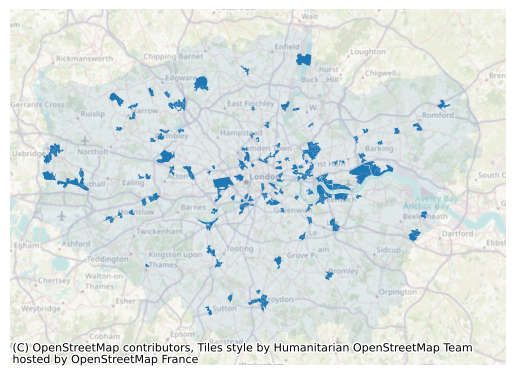
2025
imd25_src = pandas.read_csv('src_data/File_2_IoD2025 Domains of Deprivation.csv')- Keep only the rank of IMD and LED, and join to geoms
imd25 = (
lsoas
.join((
imd25_src
.set_index('LSOA code (2021)')
.rename(columns={
'Index of Multiple Deprivation (IMD) Rank (where 1 is most deprived)': 'imd25_rank',
'Living Environment Rank (where 1 is most deprived)': 'led25_rank'
})
[['imd25_rank', 'led25_rank']]
), on='LSOA21CD')
)
imd25.info()<class 'geopandas.geodataframe.GeoDataFrame'>
RangeIndex: 4951 entries, 0 to 4950
Data columns (total 4 columns):
# Column Non-Null Count Dtype
--- ------ -------------- -----
0 LSOA21CD 4951 non-null object
1 geometry 4951 non-null geometry
2 imd25_rank 4951 non-null int64
3 led25_rank 4951 non-null int64
dtypes: geometry(1), int64(2), object(1)
memory usage: 154.8+ KBJoint IMD
imd = imd25.join(
imd19.set_index('LSOA21CD')[['imd19_score', 'led19_score']], on='LSOA21CD'
)ML Split
Here we want to split the region into a number of blocks that we will assign to train/test to avoid excessive spatial leakage. We tag LSOAs with this for the modelling exercise later on.
import numpy as np
from shapely.geometry import box
def build_spatial_grid(lsoas, n_cells=50):
"""
Partition a GeoDataFrame of LSOAs into a regular rectangular grid and
return a Series mapping LSOA21CD -> block_id.
n_cells controls the approximate total number of grid cells; cell size is
derived from sqrt(bounding-box area / n_cells) so the grid scales with
the extent of the input.
"""
gdf = lsoas[['LSOA21CD', 'geometry']].to_crs(27700)
minx, miny, maxx, maxy = gdf.total_bounds
cell_size = np.sqrt((maxx - minx) * (maxy - miny) / n_cells)
xs = np.arange(minx, maxx, cell_size)
ys = np.arange(miny, maxy, cell_size)
cells = [box(x, y, x + cell_size, y + cell_size) for x in xs for y in ys]
grid = geopandas.GeoDataFrame(
{'block_id': range(len(cells))}, geometry=cells, crs=27700
)
centroids = gdf.copy()
centroids['geometry'] = centroids.geometry.centroid
tagged = centroids.sjoin(grid[['block_id', 'geometry']], how='left', predicate='within')
return tagged.set_index('LSOA21CD')['block_id']
grid_labels = build_spatial_grid(lsoas, n_cells=20)- Explore the patterning
ax = (
lsoas
.set_index('LSOA21CD')
.assign(grid_id=grid_labels)
).plot(column='grid_id', cmap='tab20')
cx.add_basemap(ax, crs=lsoas.crs)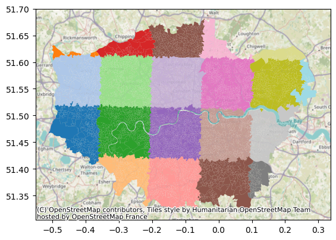
- Manually assign a train/test label with 80/20 proportions
test = [10, 5, 12]
train_test = pandas.Series('train', index=grid_labels.index)
train_test[grid_labels.isin(test)] = 'test'- Verify split
print(f"LSOAs in train: {round(len(train_test[train_test=='train'])*100/len(train_test), 2)}%")
ax = lsoas.set_index('LSOA21CD').assign(tt=train_test).plot(column='tt')
cx.add_basemap(ax, crs=lsoas.crs)LSOAs in train: 75.42%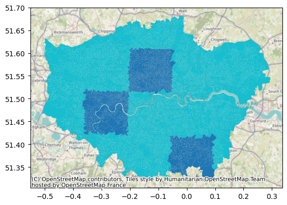
- Write it all into a single table
! rm imd.csv
(
imd
.set_index('LSOA21CD')
.assign(grid_id=grid_labels)
.assign(train_test=train_test)
.reset_index()
.drop(columns='geometry')
).to_csv('../jupyterlite/content/imd.csv')